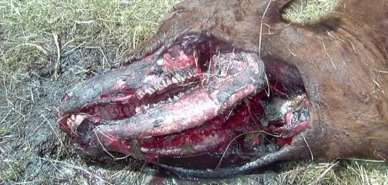

Explain why and how Cattle mutilation occurred.

(image source : https://www.theblackvault.com/documentarchive/cattle-mutilations/)
INTRODUCTION
Why did cattle mutilation occur? How did cattle mutilation occur? Various speculations have been made about this mystery, but none of them seem convincing.
Therefore, I propose my hypothesis regarding the mechanism by which cattle mutilation occurs. My hypothesis can rationally explain the following mysteries.
List of major mysteries to be solved
Why did the blood disappear from the cow's body?
Why were no traces of blood found near the scene?
Why do the cattle's skin and fur look like they were cut by a laser? Why are there microscopic scorch marks left when the cuts are magnified under a microscope?
Why was the calf disemboweled down to the bone in the short time that the human eye was away? (Case study from Skinwalker ranch)
Why were no human footprints found near the site?
Why are there so many cases of UFOs and orbs sightings in the vicinity of the damage site?
Why are traces of a fall from a height (e.g., depressions in the ground, broken bones, etc.) sometimes found on cows?
Conclusion.
Let me begin with my conclusion.
Cattle mutilation is probably caused by atmospheric emission phenomena generated in the vicinity or inside the cattle due to EMF anomalies at the site. In other words, it is probably caused by what is called plasma, ball lightning, or orb. These are collectively referred to as orb.
When an orb with sufficiently high energy is generated inside the cow or rushes into the cow from the outside, a vapor explosion 1 occurs. The cow's blood and moisture in living tissue evaporates explosively upon contact with orb. Blood has the highest conductivity in the animal body and is most efficiently and explosively evaporated because it is continuously connected to every corner by large blood vessels.
This vapor explosion instantly blows holes in the cow's body surface and soft tissues of the body surface (mouth, nose, eyes, reproductive organs, etc.).
The laser-like cuts in the fur and skin areas of cattle are caused by this instantaneous steam explosion. As evidence, microscopic magnification of the cut surface reveals scorch marks caused by heat.
The disappearance of blood from visible parts of the cow's body and the absence of any bloodstains on the nearby ground surface are due to the fact that the blood was sprayed into the air as combusted particulates 2 from the steam explosion.
If the energy of the vapor explosion was high enough, the recoil of the cow's body could cause it to leap into the air. In that case, bone fractures and depressions in the ground would result.
If a portion of the orbs that occurred at the time of this incident were sighted, it could be mistaken for a UFO.
1. The evidence of a steam explosion is shown in the article below. ↩
Thomas Ferrario : Marley Woods : The horses scattered as pieces of meat. (2021-07-31)
Steve Stockton : In the 1960s, a horse lost flesh from the neck up, as well as blood and soft parts. (2021-10-17)
2. The steam explosion scattered blood as combustion particulates, and the evidence of magnetization of the iron in the blood by the EMF of orb is the case of the past article below. ↩
Detailed Description
The following will be described at a later date
…………
Thanks
- Translated with www.DeepL.com/Translator (free version)
(2022-06-07)
(2022-06-08) Footnotes added.